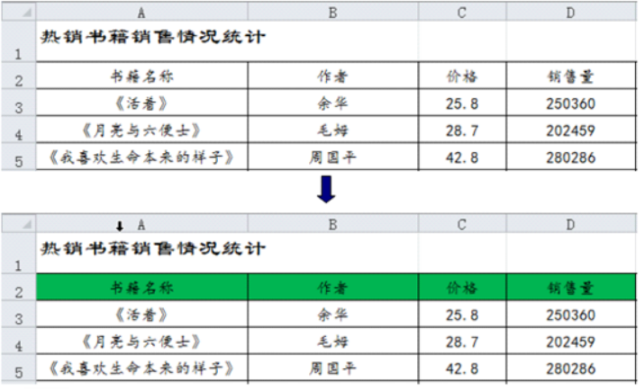

5.Excel 2010 中 A1 单元格的内容和格式如图所示，用填充柄将 A1 单元格填充到 E1 单元格，填充后的界面是（ ）。
解析：A1 单元格中的 “子” 属于自定义序列（子、丑、寅、卯、辰……），向右填充时会按序列自动填充。
因此，从 A1 填充到 E1，单元格内容会依次变为：子 → 丑 → 寅 → 卯 → 辰，且单元格格式（黄色背景）会保持一致。
选项 A 和 C 的内容正确，但选项 C 的背景色不符合 Excel 默认填充效果。
故选项 A正确。
8.如图所示，在 Excel 2010 中将上图修饰成下图可以使用（ ）工具来实现。

解析：
图中是给单元格设置了背景色，使用的是【填充颜色】工具。
14.在 Excel 中，观察下列所示光标的状态和位置，此时拖动鼠标可完成数据填充的是（ ）。
解析：
只有当光标变成黑色十字“+”形，位于单元格右下角填充柄位置时，拖动才能完成数据填充。